Paramétrer votre site Plone
Copyright (C) 2010 Thomas Desvenain <thomas.desvenain AT gmail.com>.
Chacun est autorisé à copier, distribuer et/ou modifier ce document
suivant les termes de la licence Paternité-Pas
d’Utilisation Commerciale-Partage des Conditions Initiales à l’Identique 2.0
France accessible à http://creativecommons.org/licenses/by-nc-sa/2.0/fr
Objectif
Nous allons présenter ici les options de paramétrage offertes de base
à l’administrateur d’un site Plone.
Paramètres du site
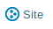
La page Paramètres du site permet d’éditer les métadonnées du site,
et des réglages de référencement (utiles principalement si votre site est un site internet)
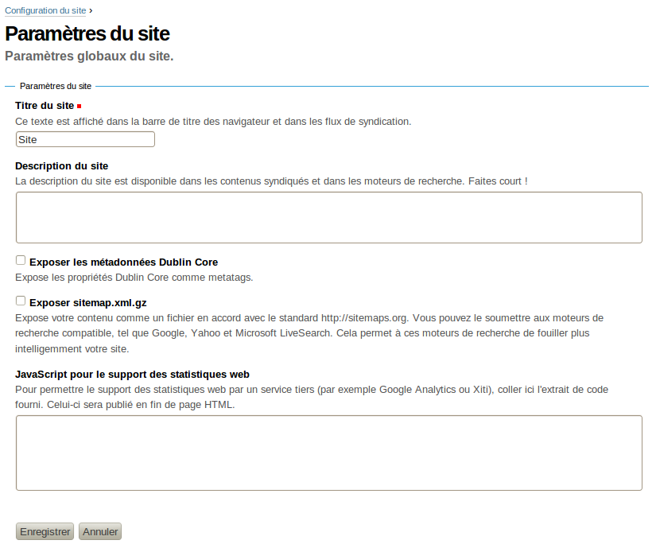
Notamment :
- le tite du site,
- sa description dans les résultats du moteur de recherche
Exposer les métadonnées Dublin Core : si cette option est activée, chaque page du site aura des metatags dont le contenu
correspondra aux métadonnées du document affiché.
Exposer sitemap.xml.gz : activé, les moteurs de recherche auront accès au sitemap, optimisant l’indexation
(activez l’option, puis allez sur sitemap.xml.gz depuis la racine de votre site).
Paramètres de base de la sécurité du site
La sécurité dans Plone est un vaste sujet, qui sera traité principalement
dans d’autres chapitres sur les workflows, les rôles et permissions, etc.
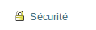
Un certain nombre d’options sont disponibles depuis le lien Sécurité de la configuration du site.
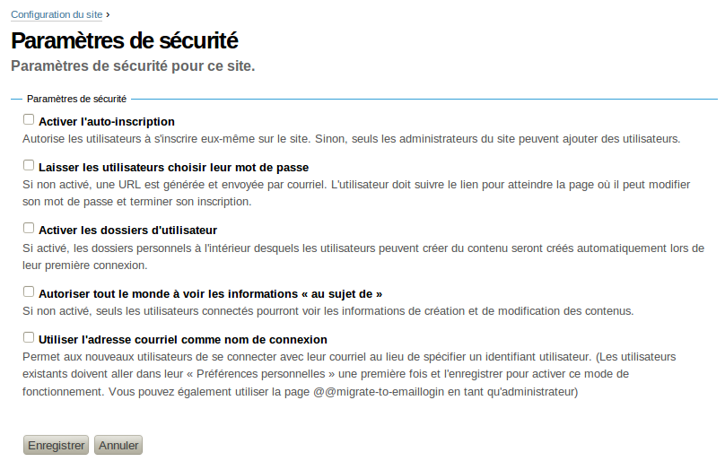
Auto-inscription
Si l’option est choisie, une option S’inscrire apparaît dans la zone de login pour les anonymes.
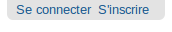
Mot de passe choisi par l’utilisateur
Si cette option est activée, lorsqu’un utilisateur est créé
un mot de passe provisoire est envoyé au nouvel inscrit, qui peut le modifier immédiatement.
Activer les dossiers de l’utilisateur
L’option ajoute un lien dossier personnel dans le menu de l’utilisateur.
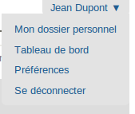
Il s’agit d’un dossier qui est administré par l’utilisateur,
dans lequel il peut ajouter des documents qu’il peut soumettre à publication.
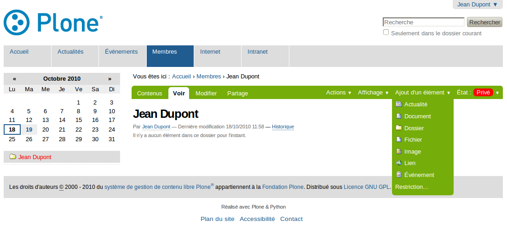
Connexion par email
Permet aux utilisateurs de se connecter en utilisant leur email
à la place de leur login.
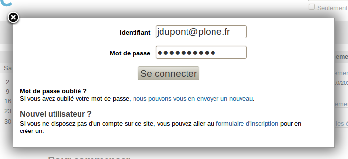
Paramétrage du calendrier
Le calendrier de Plone affiche, dans une portlet, un petit calendrier dans lequel
les dates comprenant des événements apparaissent en surbrillance.
Nous allons d’abord ajouter une portlet calendrier sur notre site, en haut à gauche.
Ajouter un calendrier
Rendez-vous à la racine de votre site, en cliquant sur le logo.
En bas à gauche de la page, cliquez sur Gérer les portlets
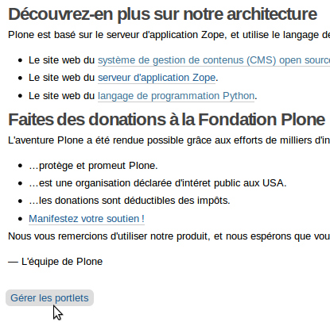
Vous arrivez sur la page de gestion des portlets.
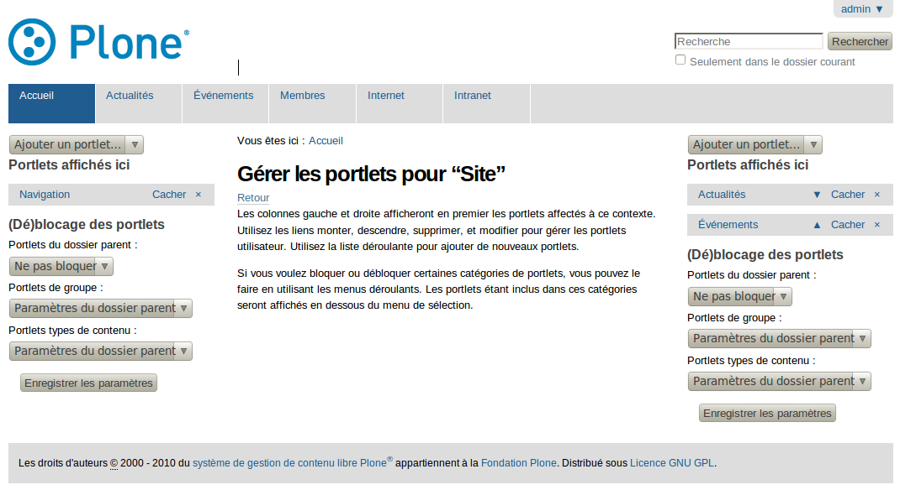
Cliquez sur Ajouter un portlet... sur la colonne de gauche, et sélectionnez la portlet calendrier.
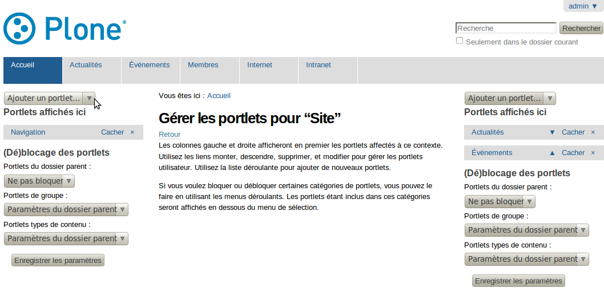
Cliquez sur la flèche-haut devant Calendrier
pour monter le calendrier au-dessus de la navigation.
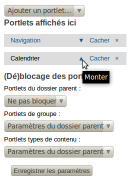
Revenez sur l’accueil. Vous avez maintenant votre portlet calendrier.
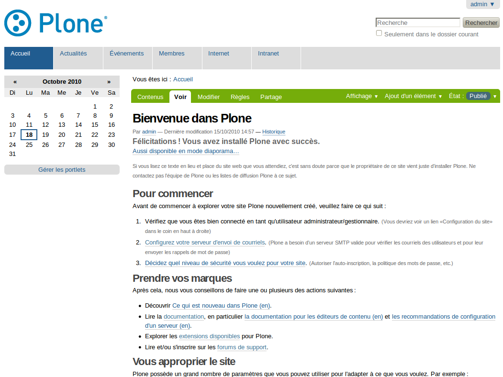
Il est bien vide pour le moment...
Compléter le calendrier
Le calendrier contient des références à des contenus événement.
Allez dans le dossier Événements et ajoutez-en un.
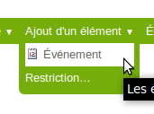
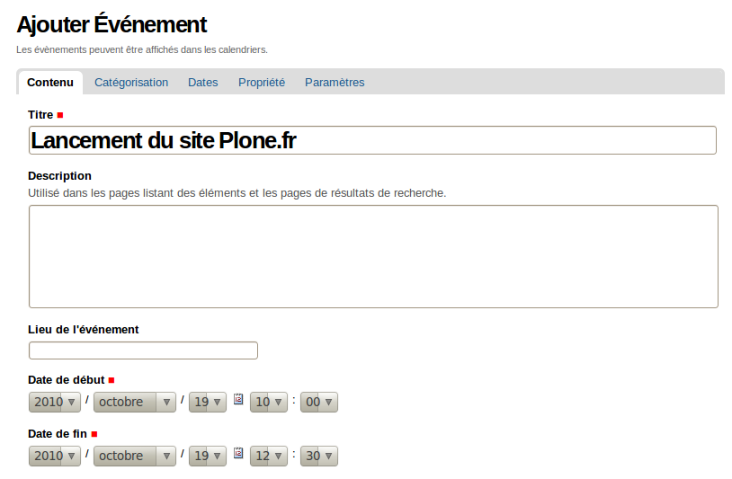
Pour l’instant, rien n’a changé.
Publiez-le. Il apparait dans le calendrier.
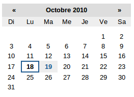
Créez un autre événement pour la veille du précédent,
Préparation de la salle, et enregistrez-le, cette fois sans le publier.
Vous voudriez peut-être que les événements ‘privés’ s’affichent pour leurs propriétaires
et tous ceux qui y ont accès. Il est possible de configurer cela.
Paramétrage de la navigation
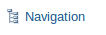
La page Paramètres de navigation permet de configurer deux choses :
les onglets généraux du site et la portlet de navigation.
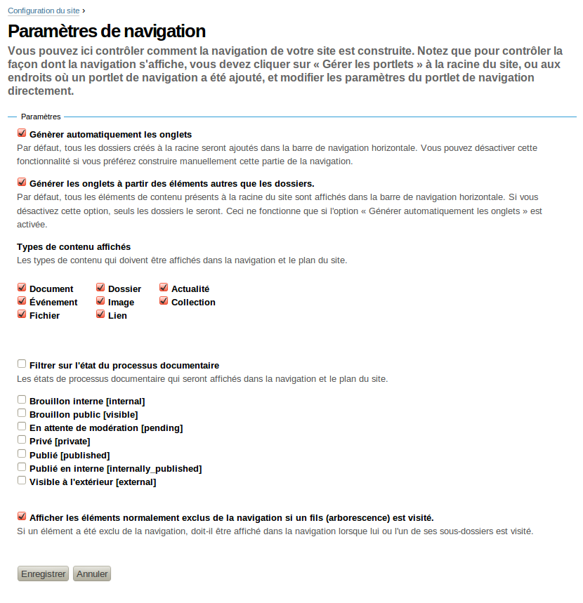
Configuration des onglets
Par défaut, la barre de navigation supérieure affiche un onglet
pour chaque dossier ajouté à la racine.
La première option permet de désactiver ce comportement.
(Dans ce cas, il faudra ajouter manuellement les actions sur la barre d’onglet,
ce qui est plus complexe et fera l’objet d’un autre chapitre)
Si la seconde option est activée, les documents de la racine
seront également affichés comme onglets.
Si vous voulez masquer un dossier des onglets (par exemple : Membres),
rendez-vous sur le dossier, cliquez sur Modifier, puis Paramètres.
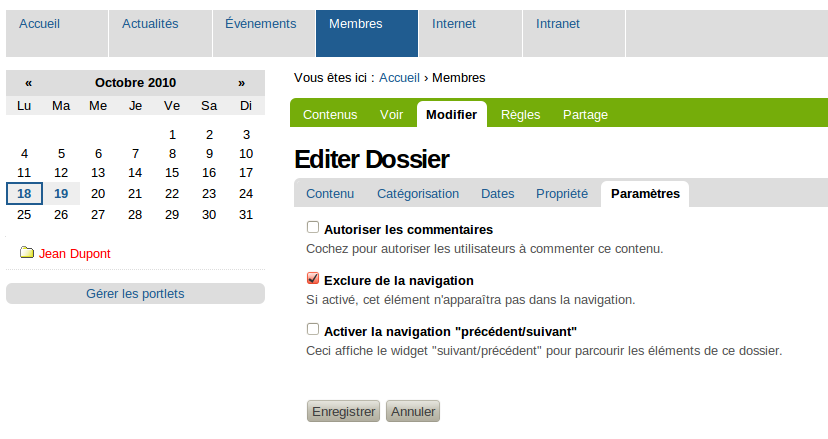
Cochez Exclure de la navigation et enregistrez.
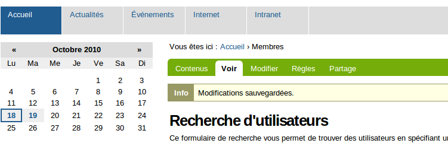
Membres n’apparaît plus dans la barre de navigation supérieure.
Configuration de la navigation
Vous pouvez également choisir ici les types de contenus affichés dans la portlet de navigation.
Il est fréquent de choisir de n’afficher que les dossiers.
Vous pouvez également filtrer les contenus affichés dans l’arborescence
par état documentaire (sachant que, de toute façon, seuls les dossiers et documents
qu’un utilisateur a le droit de voir apparaissent dans la navigation)
Le plan du site utilise également ces paramètres.
Configuration de la portlet de navigation
Attention, ces paramètres ne recouvrent qu’une partie de la configuration
de la portlet de navigation. Pour la configurer, revenez à la racine et cliquez sur
Gérer les portlets à gauche.
Cliquez maintenant sur le nom de la portlet Navigation.
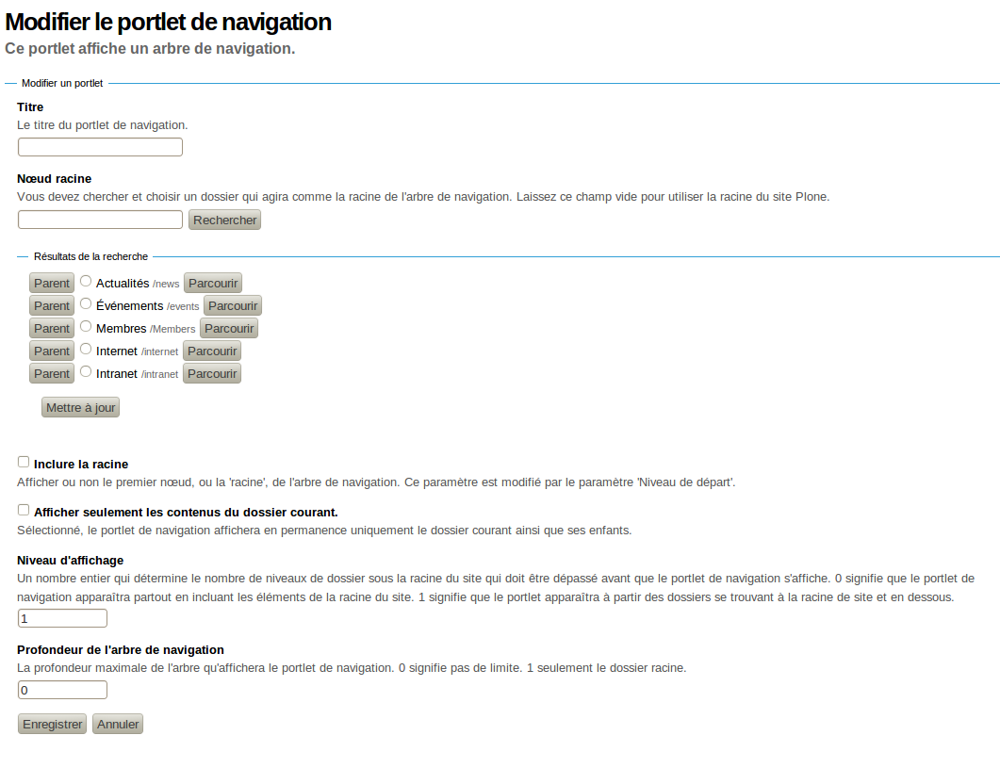
Vous arrivez sur un menu de configuration (assez complexe)
où vous définissez essentiellement trois choses :
- le niveau d’affichage, qui est le nombre de niveaux à partir du niveau racine
avant qu’on affiche les contenus dans la navigation
- le niveau racine, qui est le niveau à partir duquel on compte le niveau d’affichage
- la profondeur d’affichage, qui est le nombre de niveaux maximal qu’on affiche
sous le niveau racine...
Par défaut, le niveau d’affichage est 1 et le niveau racine est la racine du site :
on ne voit donc que les documents contenus dans les dossiers ajoutés à la racine...
(les choses sont paramétrées par défaut de cette façon de sorte que les dossiers à
la racine n’apparaissent pas ET dans la portlet de navigation ET dans la barre d’onglets)
Imaginons que nous voulions afficher les dossiers à la racine.
Entrez 0 pour niveau d’affichage et enregistrez.
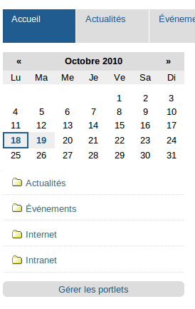
Conclusion
Pourquoi deux pages pour configurer la portlet de navigation : dans les paramètres du site
et dans les paramètres de la portlet ?
En fait, vous pouvez tout à fait avoir plusieurs portlets de navigation sur votre site,
configurées différemment. Mais toutes sont concernées par les paramètres définis
au niveau de la configuration du site...
Paramètres de la recherche
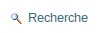
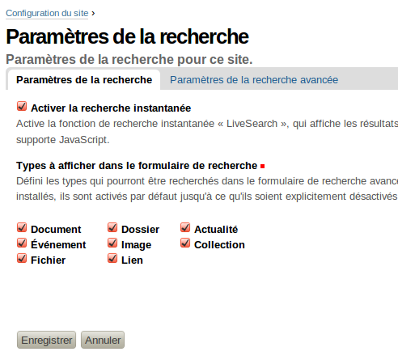
La page Paramètres de la recherche permet :
- D’activer / désactiver la recherche instantanée,
- De sélectionner les types de contenu dans lesquels on fait nos recherches,
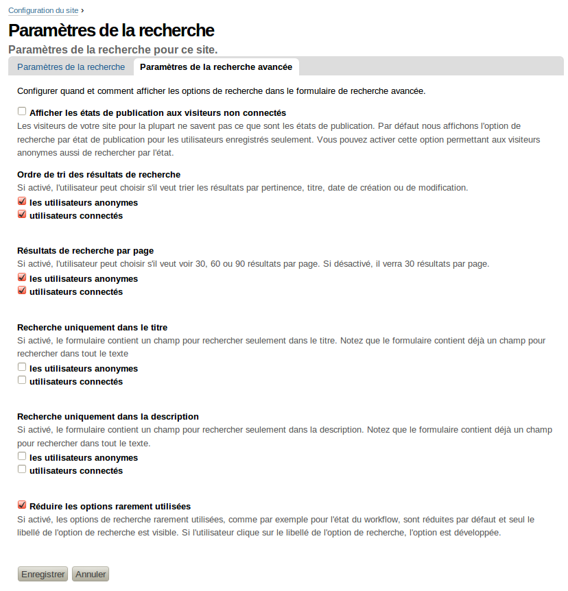
Et de décider finement d’activer ou pas certaines options de recherche de la recherche avancée :
- possibilité de chercher par état pour les anonymes,
- possibilité de modifier l’ordre des résultats,
- possibilité de modifier le nombre de résultats par page,
- champs de recherche spécifiques Titre et Description,
- réduction automatique des options rarement utilisées.
Paramétrage des modules
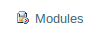
Pour l’activation et la désactivation de modules, référez-vous au chapitre
Choix et ajout d’un module.
Paramétrer l’édition de contenus
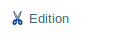
La page des Paramètres d’édition permet de configurer le comportement général
de l’édition de documents.
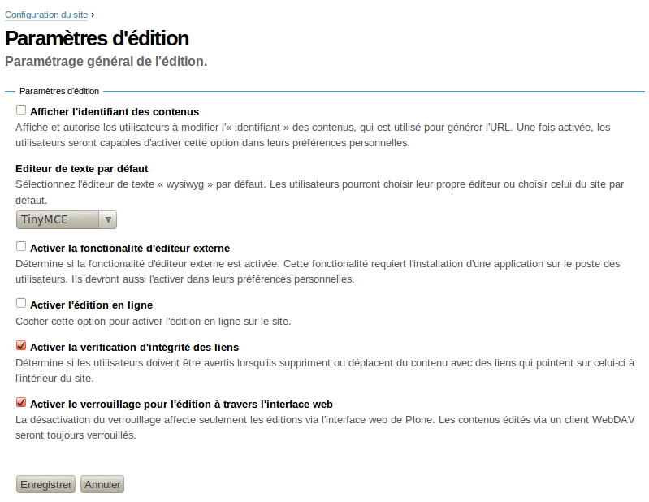
Edition de l’identifiant
Chaque contenu a un identifiant, qui est unique dans chaque dossier.
Par défaut, l’identifiant est généré automatiquement à partir du titre proposé.
Vu que l’identifiant est utilisé dans l’URL, de nombreux utilisateurs préfèrent
le saisir eux mêmes.
Avec cette option activée, les utilisateurs auront une nouvelle option dans leurs
préférences personnelles :
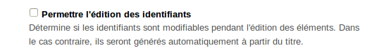
Si elle est activée, l’utilisateur pourra saisir l’identifiant d’un document
lorsqu’il le crée ou le modifie.
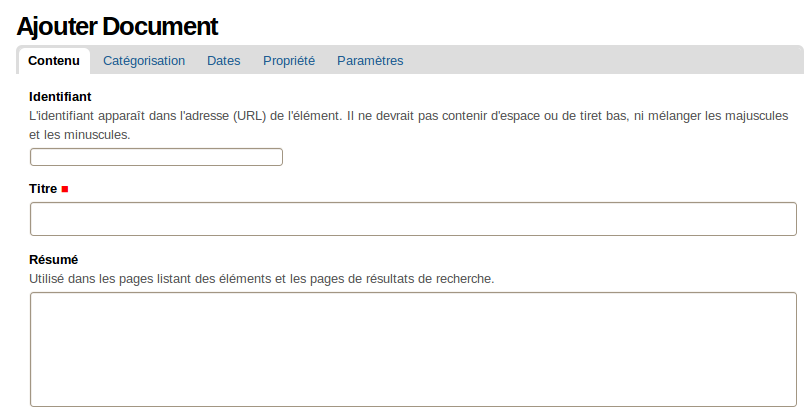
Éditeur de texte par défaut
Par défaut sur Plone, l’éditeur de texte est TinyMCE.
Cependant il est possible d’installer d’autres éditeurs (ckeditor notamment).
Chaque utilisateur peut choisir son éditeur, mais par défaut,
l’éditeur sera celui choisi sur cette page de configuration.
Si vous avez installé un nouvel éditeur sur votre site, ckeditor par exemple,
il aura une page de configuration spéciale, avec un lien ajouté dans la partie
Configuration de module du menu de configuration.
Éditeur externe
Si cette option est activée, les utilisateurs auront la possibilité d’activer
l’édition externe dans leurs préférences personnelles.
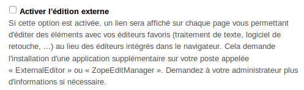
L’édition externe permet, à condition d’avoir installé un soft sur son poste,
de modifier des documents de Plone en les éditant directement avec son logiciel
préféré, sans avoir besoin de passer par un formulaire.
Ce qui est particulièrement utile pour les fichiers type tableur ou traitement de texte.
Veuillez vous référer au chapitre Zope External Editor pour de plus amples informations.
Édition en ligne
À ne pas confondre avec l’édition externe,
l’édition en ligne permet de modifier les documents en saissant directement
vos données en cliquant sur la vue d’affichage, sans passer par un formulaire de modification.
Par exemple, ici nous modifions ‘en ligne’ la description de la page d’accueil du site.
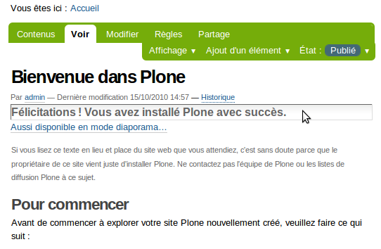
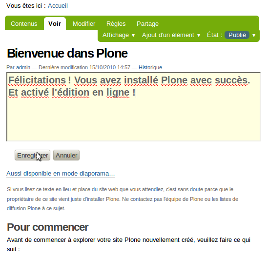
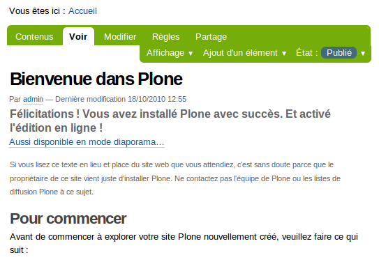
Attention, cette option ralentit considérablement les performances sur les anciens navigateurs (IE 6...).
Sur les navigateurs les plus récents, elle est par contre insensible.
Vérification de l’intégrité des liens
Si cette option est activée, lorsque vous supprimez un document, Plone vérifie
qu’aucun autre document ne contient un lien vers ce document, et vous alerte le cas échéant.
Nous avons créé un document Mon document de référence
et un document Mon document contenant des liens.
Dans ce dernier, nous avons ajouté un lien, dans le texte principal, avec le premier.
Quand nous supprimons Mon document de référence
nous obtenons cette popup de confirmation :
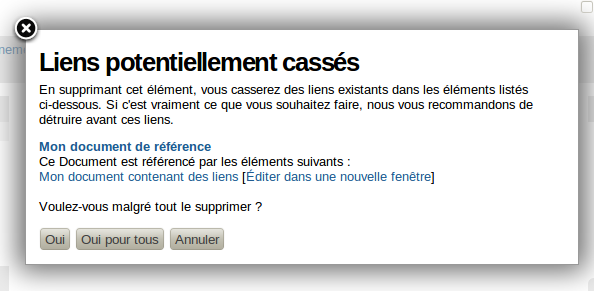
Verrouillage des documents en modification
Quand le verrouillage est activé, si un utilisateur est sur le formulaire de modification
d’un document, les autres utilisateurs susceptibles de modifier le document sont avertis,
et ils ne peuvent accéder au formulaire sans forcer le déverrouillage.
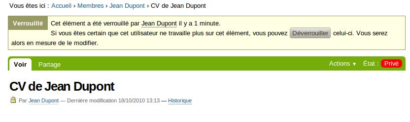
Paramétrer le filtrage du contenu ajouté en HTML
Les éditeurs WYSIWIG permettent aux contributeurs du site d’éditer le code html
de pages qui seront ensuite affichées par les navigateurs des visiteurs du site.
Il peut être dangereux ou gênant de permettre à vos utilisateurs de créer des formulaires,
d’afficher des objets flash ou autre, d’ajouter des balises meta,
de trop paramétrer le style de son contenu, etc.
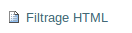
La page Paramètres du filtrage HTML permet à l’administrateur du site de contrôler
les éléments html dont il permet l’introduction par les contributeurs.
Dans l’autre sens, si vos utilisateurs s’étonnent que certains contenus qu’ils ajoutent
ne sont pas enregistrés, c’est ici que vous pouvez étendre les autorisations.
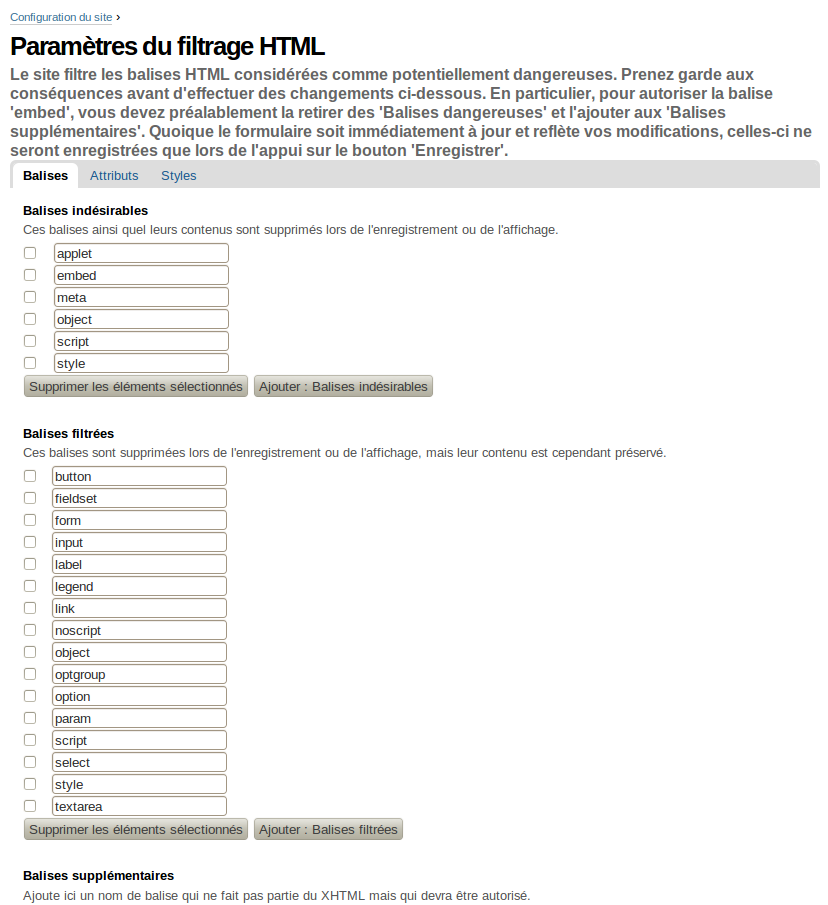
La première page permet de définir les balises qui sont filtrées.
Filtrage des balises
Par défaut, toutes les balises XHTML sont acceptées, les autres sont filtrées :
l’élément est supprimé mais pas son contenu.
Éditez un document du site avec un éditeur WYSIWYG, mais avec l’option HTML
(éditer le code source). Entrez le contenu
<toto>Ceci est du texte dans une balise non-html</toto>
Enregistrez le document. Éditez-le à nouveau. Le texte ci-dessus a été remplacé
par du XHTML valide, par exemple avec TinyMCE
<p>Ceci est du texte dans une balise non-html</p>
Balises indésirables
Ajoutez maintenant ce code
<script language="Javascript">while(0!=1) alert('toto');</script>
Enregistrez. Heureusement, ce script ne s’applique pas !
Rééditez votre page sur l’édition, et cliquez sur ‘HTML’. Vous verrez que votre code
a été remplacé par
<!-- while(0!=1) alert('toto'); // -->
Les balises indésirables sont commentées. Là donc, même le contenu n’apparaît pas.
Balises non-XHTML autorisées
Le troisième bloc de la page permet d’autoriser dans le html des balises
qui ne sont pas XHTML. On y trouve notamment les balises HTML5.
Filtrage des attributs
La deuxième page permet de filtrer les attributs.
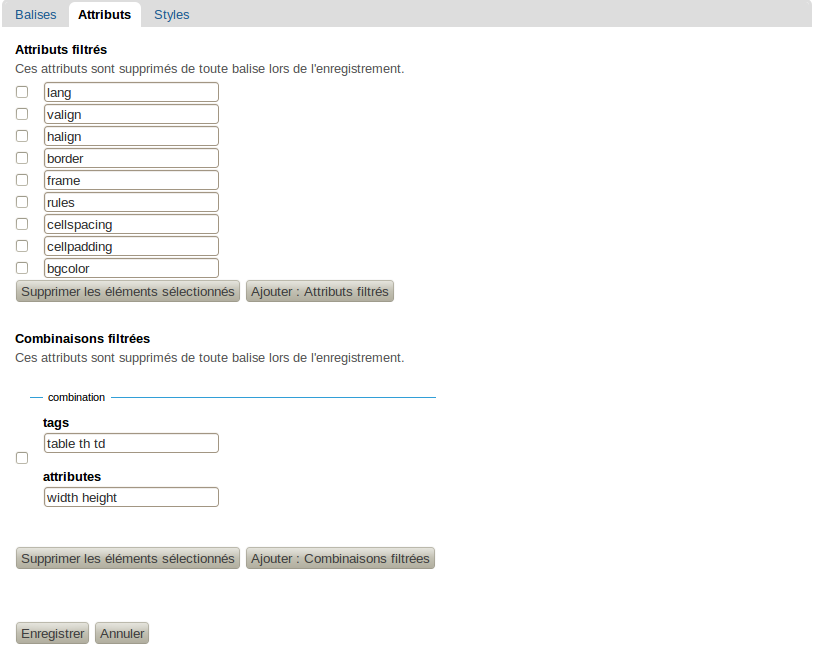
Le premier bloc indique la liste des attributs qui seront simplement supprimés à l’enregistrement.
Le second bloc indique les attributs qui seront supprimés
s’ils sont dans telle ou telle balise en particulier.
Par exemple, ici on retire les attributs width et weight des tables et des cellules.
Filtrage des styles et des classes
Si l’attribut style est autorisé, vous ne voulez pas forcément que vos utilisateurs
puissent attribuer n’importe quelle valeur css.
De même, vous craignez peut-être que vos utilisateurs utilisent certaines classes css.
Vous pouvez maitriser la liste des attributs css disponibles dans les attributs ‘styles’,
ainsi que les noms de classes interdits dans toute balise ‘class’.
Editez votre document, et entrez ce code
<p style="font-size: 250px; text-align: right">Mon texte stylé</p>
Vous observez que seul le text-align s’applique. Éditez à nouveau le contenu,
vous verrez que ce code est conservé
<p style="text-align: right; ">Mon texte stylé</p>
Paramétrer le comportement wiki
Activer le comportement wiki
Plone permet d’avoir un comportement wiki, afin d’optimiser la création de contenus liés.
Par défaut, cela n’est pas activé. Allez dans Paramètres du formatage de texte.
Puis allez sur l’onglet Comportement wiki.
Nous allons l’activer pour les documents. Cochez Documents et enregistrez.
Se servir de Plone comme d’un Wiki
Créez maintenant un document sur votre site.
Mettez entre double-parenthèses (( )) ou entre double-crochets [[ ]] les documents
que vous voulez pouvoir lier par la suite.
Un clic sur un lien ‘+’ crée un nouveau contenu ayant pour titre le texte lié.
Le lien + se transforme en lien vers le nouveau contenu.
L’identifiant (ici : CMS) peut être utilisé à plusieurs endroits (y compris sur plusieurs pages différentes),
il crée automatiquement un lien vers cette nouvelle page.
Gestion des tailles d’images
Quand vous ajoutez une image dans un document,
vous choisissez parmi un certain nombre de tailles d’images.
Ces tailles disponibles sont éditables dans la configuration du site, dans
Paramètres de la gestion des images.
Maintenance du serveur et de la base
Les opérations de maintenance sont disponibles depuis la page Maintenance
du menu de configuration.
Vous pouvez, de cette page, arrêter ou redémarrer le site,
et ‘packer’ la base de données.
La base de données (ZODB) doit être packée régulièrement.
Elle stocke toutes les transactions effectuées,
ce qui est utile notamment pour la fonction Undo,
mais ralentit progressivement les performances en lecture / écriture.
Il est nécessaire de purger ces informations,
en conservant celles des derniers jours.
Un chapitre sur la ZODB est à venir dans la documentation développeur.
Choix de la langue du Site
La page Paramètres linguistiques permet de choisir la langue du site.
Elle est définie par défaut comme la langue du navigateur
de l’utilisateur qui a créé le site.
Les options de langue pour les sites multilingues ne se configurent pas ici.
Nous fournirons une documentation spécifique pour les sites en plusieurs langues.
Paramétrer les collections
Cette page permet de sélectionner les critères disponibles pour les collections,
et de les paramétrer,
ainsi que les données disponibles à l’affichage des collections.
Cette page correspond à un paramétrage plus avancée du site, nous y reviendrons
dans un chapitre dédié aux collections.
Paramétrer les types de contenu
Définir le workflow par défaut
Première page : workflow par défaut.
Changer le workflow :
Enregistrer :
Définir le workflow de chaque type
Sélectionner un type. On peut choisir son workflow spécifique.
Ajout global
Si cette option est activée pour un type, un document de ce type peut être ajouté
dans n’importe quel dossier qui ne comporte pas de restriction sur son contenu.
Politique de versionnement
Activer le versionnement manuel pour les fichiers.
Modifier ensuite un fichier.
Cocher la case nouvelle version.
Portlets spécifiques du type de contenu
Vous pouvez paramétrer des portlets qui s’afficheront suivant le type de contenu
de la page affichée.
Sélectionnez un type de contenu (ici Fichier) sur l’écran de configuration des types.
Vous avez un lien Gérer les portlets affectés à ce type de contenu.
Cliquez ce lien, vous arrivez sur une page similaire à la page Gérer les portlets
vue plus haut.
Ajoutez une portlet, en naviguant sur le site, vous verrez que lorsque vous
allez sur une page Fichier, cette portlet apparaît.